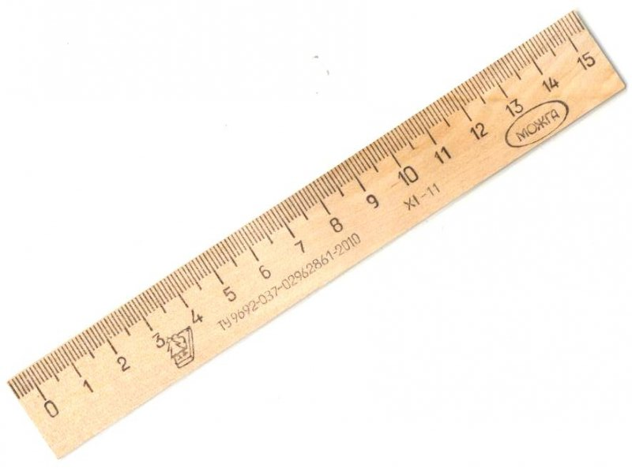
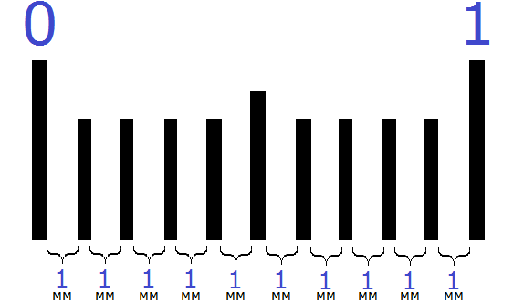
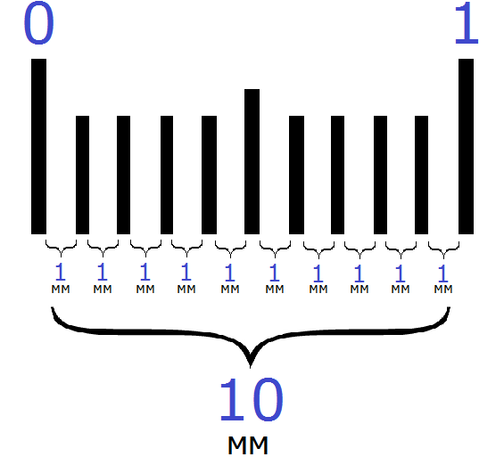
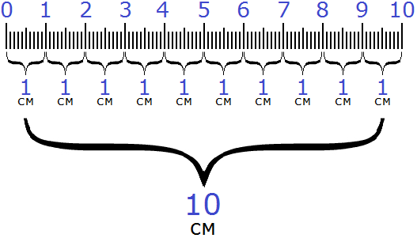
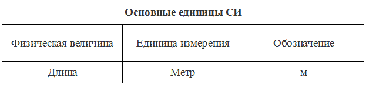
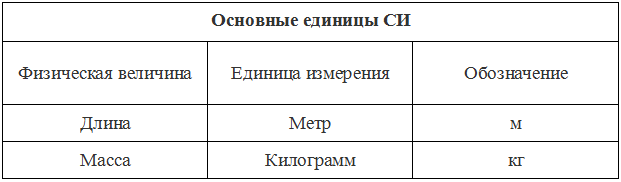
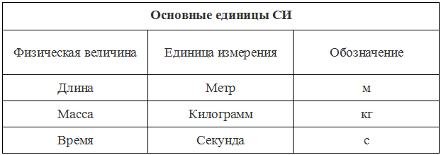

Этот урок не будет новым для новичков. Все мы слышали со школы такие понятия как сантиметр, метр, километр. А когда речь заходила о массе, обычно говорили грамм, килограмм, тонна.
Сантиметры, метры и километры; граммы, килограммы и тонны носят одно общее название — единицы измерения физических величин.
В данном уроке мы рассмотрим наиболее популярные единицы измерения, но не будем сильно углубляться в эту тему, поскольку единицы измерения уходят в область физики. Сегодня мы вынуждены изучить часть физики, поскольку нам это необходимо для дальнейшего изучения математики.
Содержание урока- Единицы измерения длины
- Международная система единиц СИ
- Единицы измерения массы
- Единицы измерения времени
Единицы измерения длины
Для измерения длины предназначены следующие единицы измерения:
- миллиметры;
- сантиметры;
- дециметры;
- метры;
- километры.
Самая маленькая единица измерения это миллиметр (мм). Миллиметры можно увидеть даже воочию, если взять линейку, которой мы пользовались в школе каждый день

Подряд идущие друг за другом маленькие линии это и есть миллиметры. Точнее, расстояние между этими линиями равно одному миллиметру (1 мм):

Следующая единица измерения это сантиметр (см). На линейке каждый сантиметр обозначен числом. К примеру наша линейка, которая была на первом рисунке, имела длину 15 сантиметров. Последний сантиметр на этой линейке выделен числом 15.
В одном сантиметре 10 миллиметров. Между одним сантиметром и десятью миллиметрами можно поставить знак равенства, поскольку они обозначают одну и ту же длину:
1 см = 10 мм
Вы можете сами убедиться в этом, если посчитаете количество миллиметров на предыдущем рисунке. Вы обнаружите, что количество миллиметров (расстояний между линиями) равно 10.

Следующая единица измерения длины это дециметр (дм). В одном дециметре десять сантиметров. Между одним дециметром и десятью сантиметрами можно поставить знак равенства, поскольку они обозначают одну и ту же длину:
1 дм = 10 см
Вы можете убедиться в этом, если посчитаете количество сантиметров на следующем рисунке:

Вы обнаружите, что количество сантиметров равно 10.
Следующая единица измерения это метр (м). В одном метре десять дециметров. Между одним метром и десятью дециметрами можно поставить знак равенства, поскольку они обозначают одну и ту же длину:
1 м = 10 дм
К сожалению, метр нельзя проиллюстрировать на рисунке, потому что он достаточно великоват. Если вы хотите увидеть метр в живую, возьмите рулетку. Она есть у каждого в доме. На рулетке один метр будет обозначен как 100 см. Это потому что в одном метре десять дециметров, а в десяти дециметрах сто сантиметров:
1 м = 10 дм = 100 см
100 получается путём перевода одного метра в сантиметры. Это отдельная тема, которую мы рассмотрим чуть позже. А пока перейдём к следующей единице измерения длины, которая называется километр.
Километр считается самой большой единицей измерения длины. Есть конечно и другие более старшие единицы, такие как мегаметр, гигаметр тераметр, но мы не будем их рассматривать, поскольку для дальнейшего изучения математики нам достаточно и километра.
В одном километре тысяча метров. Между одним километром и тысячью метрами можно поставить знак равенства, поскольку они обозначают одну и ту же длину:
1 км = 1000 м
В километрах измеряются расстояния между городами и странами. К примеру, расстояние от Москвы до Санкт-Петербурга около 714 километров.
Международная система единиц СИ
Международная система единиц СИ — это некоторый набор общепринятых физических величин.
Основное предназначение международной системы единиц СИ — достижение договоренностей между странами.
Мы знаем, что языки и традиции стран мира различны. С этим ничего не поделать. Но законы математики и физики одинаково работают везде. Если в одной стране «дважды два будет четыре», то и в другой стране «дважды два будет четыре».
Основная проблема заключалась в том, что для каждой физической величины существует несколько единиц измерения. К примеру, мы сейчас узнали, что для измерения длины существуют миллиметры, сантиметры, дециметры, метры и километры. Если несколько ученых, говорящих на разных языках, соберутся в одном месте для решения какой-нибудь задачи, то такое большое многообразие единиц измерения длины может породить между этими учеными противоречия.
Один ученый будет заявлять, что в их стране длина измеряется в метрах. Второй может сказать, что в их стране длина измеряется в километрах. Третий может предложить свою единицу измерения.
Поэтому была создана международная система единиц СИ. СИ это аббревиатура от французского словосочетания Le Système International d’Unités, SI (что в переводе на русский означает — международная система единиц СИ).
В СИ приведены наиболее популярные физические величины и для каждой из них определена своя общепринятая единица измерения. К примеру, во всех странах при решении задач условились, что длину будут измерять в метрах. Поэтому, при решении задач, если длина дана в другой единице измерения (например, в километрах), то её обязательно нужно перевести в метры. О том, как переводить одну единицу измерения в другую, мы поговорим немного позже. А пока нарисуем свою международную систему единиц СИ.
Наш рисунок будет представлять собой таблицу физических величин. Каждую изученную физическую величину мы будем включать в нашу таблицу и указывать ту единицу измерения, которая принята во всех странах. Сейчас мы изучили единицы измерения длины и узнали, что в системе СИ для измерения длины определены метры. Значит наша таблица будет выглядеть так:

Единицы измерения массы
Масса – это величина, обозначающая количество вещества в теле. В народе массу тела называют весом. Обычно, когда что-либо взвешивают, говорят «это весит столько-то килограмм», хотя речь идёт не о весе, а о массе этого тела.
Вместе с тем, масса и вес это разные понятия. Вес — это сила с которой тело действует на горизонтальную опору. Вес измеряется в ньютонах. А масса это величина, показывающая количество вещества в этом теле.
Но ничего страшного нет в том, если вы назовёте массу тела весом. Даже в медицине говорят «вес человека», хотя речь идёт о массе человека. Главное быть в курсе, что это разные понятия
Для измерения массы используются следующие единицы измерения:
- миллиграммы;
- граммы;
- килограммы;
- центнеры;
- тонны.
Самая маленькая единица измерения это миллиграмм (мг). Миллиграмм скорее всего вы никогда не примените на практике. Их применяют химики и другие ученые, которые работают с мелкими веществами. Для вас достаточно знать, что такая единица измерения массы существует.
Следующая единица измерения это грамм (г). В граммах принято измерять количество того или иного продукта при составлении рецепта.
В одном грамме тысяча миллиграммов. Между одним граммом и тысячью миллиграммами можно поставить знак равенства, поскольку они обозначают одну и ту же массу:
1 г = 1000 мг
Следующая единица измерения это килограмм (кг). Килограмм это общепринятая единица измерения. В ней измеряется всё что угодно. Килограмм включен в систему СИ. Давайте и мы включим в нашу таблицу СИ ещё одну физическую величину. Она у нас будет называться «масса»:

В одном килограмме тысяча граммов. Между одним килограммом и тысячью граммами можно поставить знак равенства, поскольку они обозначают одну и ту же массу:
1 кг = 1000 г
Следующая единица измерения это центнер (ц). В центнерах удобно измерять массу урожая, собранного с небольшого участка или массу какого-нибудь груза.
В одном центнере сто килограммов. Между одним центнером и ста килограммами можно поставить знак равенства, поскольку они обозначают одну и ту же массу:
1 ц = 100 кг
Следующая единица измерения это тонна (т). В тоннах обычно измеряются большие грузы и массы больших тел. Например, масса космического корабля или автомобиля.
В одной тонне тысяча килограмм. Между одной тонной и тысячью килограммами можно поставить знак равенства, поскольку они обозначают одну и ту же массу:
1 т = 1000 кг
Единицы измерения времени
Что такое время думаем объяснять не нужно. Каждый знает что из себя представляет время и зачем оно нужно. Если мы откроем дискуссию на то, что такое время и попытаемся дать ему определение, то начнем углубляться в философию, а это нам сейчас не нужно. Лучше начнём с единиц измерения времени.
Для измерения времени предназначены следующие единицы измерения:
- секунды;
- минуты;
- часы;
- сутки.
Самая маленькая единица измерения это секунда (с). Есть конечно и более маленькие единицы такие как миллисекунды, микросекунды, наносекунды, но их мы рассматривать не будем, поскольку на данный момент в этом нет смысла.
В секундах измеряются различные показатели. Например, за сколько секунд спортсмен пробежит 100 метров. Секунда включена в международную систему единиц СИ для измерения времени и обозначается как «с». Давайте и мы включим в нашу таблицу СИ ещё одну физическую величину. Она у нас будет называться «время»:

Следующая единица измерения времени это минута (м). В одной минуте 60 секунд. Между одной минутой и шестьюдесятью секундами можно поставить знак равенства, поскольку они обозначают одно и то же время:
1 м = 60 с
Следующая единица измерения это час (ч). В одном часе 60 минут. Между одним часом и шестьюдесятью минутами можно поставить знак равенства, поскольку они обозначают одно и то же время:
1 ч = 60 м
К примеру, если мы изучали этот урок один час и нас спросят сколько времени мы потратили на его изучение, мы можем ответить двумя способами: «мы изучали урок один час» или так «мы изучали урок шестьдесят минут». В обоих случаях, мы ответим правильно.
Следующая единица измерения времени это сутки. В сутках 24 часа. Между одними сутками и двадцатью четырьмя часами можно поставить знак равенства, поскольку они обозначают одно и то же время:
1 сут = 24 ч
Возникло желание поддержать проект?
Используй кнопку ниже